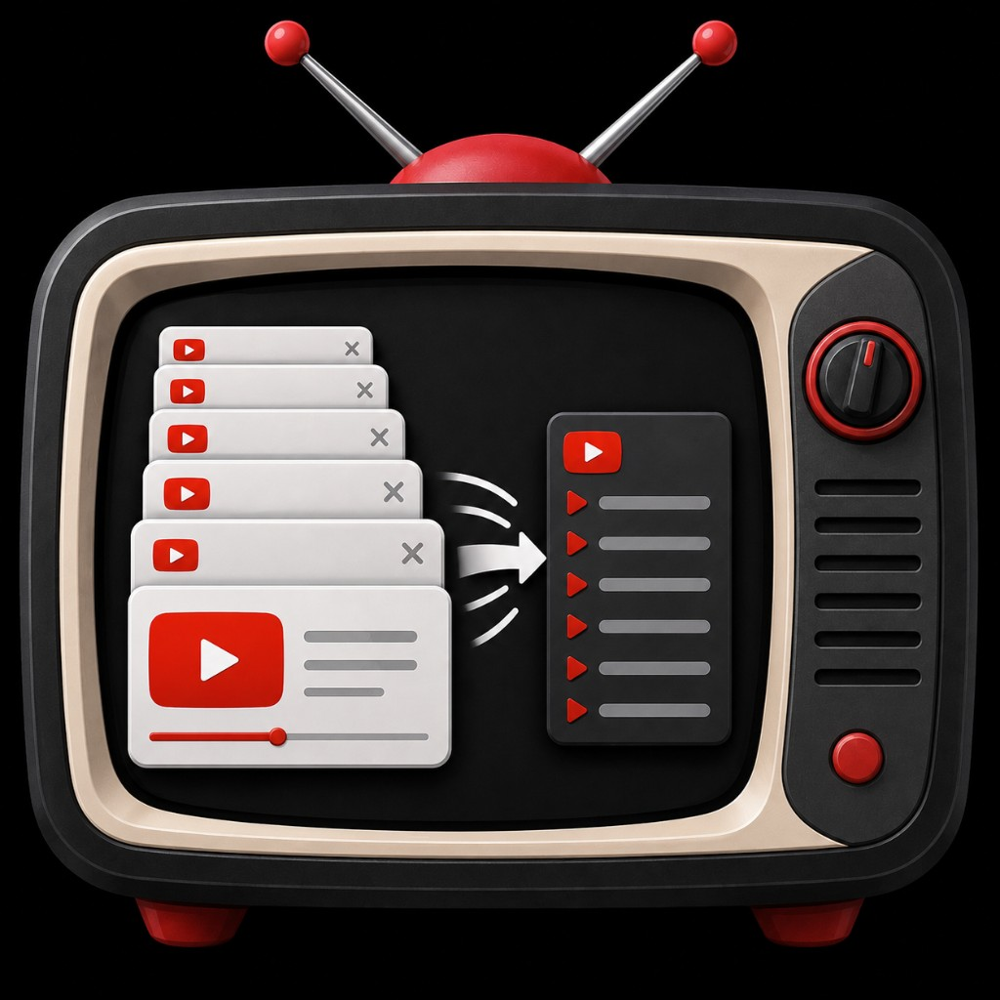

TubeStack setup guide
TubeStack works without any of this. Follow this guide only if you want YouTube-powered extras. It takes about 10 minutes, once, in your own free Google Cloud project — TubeStack has no server, so it talks to Google with credentials that you create and that stay in this browser.
Needs steps 1–3.
Needs steps 1, 2, 4 and 5.
You can set up either one, both, or neither. Everything else in TubeStack works locally.
Copy these exactly when Google asks for them. They are specific to this TubeStack install.
YouTube Data API v3
Open this page from TubeStack to see it
https://www.googleapis.com/auth/youtube
—
The redirect URI contains the extension ID. A different TubeStack install (another Chrome profile, or a second unpacked copy) has a different ID, so add its redirect URI to the same OAuth client too.
AIza.https://www.googleapis.com/auth/youtube.While the app is in Testing, only accounts listed as Test users can sign in. Open Audience (or the test-users step), click Add users, and add the full Google email you use in Chrome. Don’t click Publish app unless you intend to go through Google’s verification for a public app — for personal use, Testing is normal.
.apps.googleusercontent.com).TubeStack only needs the Client ID. You never paste a client secret into TubeStack.
See where to paste below, then run the built-in tests.
The setup wizard asks for the API key, then the OAuth Client ID, each with a Test button.
Dashboard → Settings → Optional integrations → Google (YouTube): paste the key, click Save API key then Test API key; paste the Client ID, click Save Client ID then Test Google sign-in.
Connect YouTube walks through just the OAuth Client ID and a test sign-in.
Your Google account isn’t listed under Test users on the consent screen (step 4), or the app was published. Add the exact email you sign in with and keep the app in Testing.
redirect_uri_mismatchThe OAuth client doesn’t list this install’s redirect URI. Copy it from Your values into Authorized redirect URIs and save. Make sure the client type is Web application. Changes can take a few minutes to apply.
Check that YouTube Data API v3 is enabled in the same project as the key (step 2), that the key was copied completely, and that any API restriction includes YouTube Data API v3.
Google gives each project a free daily YouTube API quota. If it runs out, requests fail until it resets the next day (Pacific time). Usage is visible under APIs & Services → YouTube Data API v3 → Quotas.
TubeStack backups deliberately leave out API keys and the OAuth Client ID. Paste them again on the new install, and add the new install’s redirect URI to your OAuth client (the extension ID changes).
www.googleapis.com with the request when you run a channel scan, a key test, or a
tag/category lookup (video IDs or the channel handle you entered).
googleapis.com the first time a feature needs it.
Full details: Privacy policy.
Some dashboard tools (for example AI-assisted categorization) can call OpenAI using an API key you store in TubeStack. The key stays on this device and is sent only to OpenAI when you run those features.
A ChatGPT subscription doesn’t fund API calls. Use Test API connection in Settings to confirm the key works.